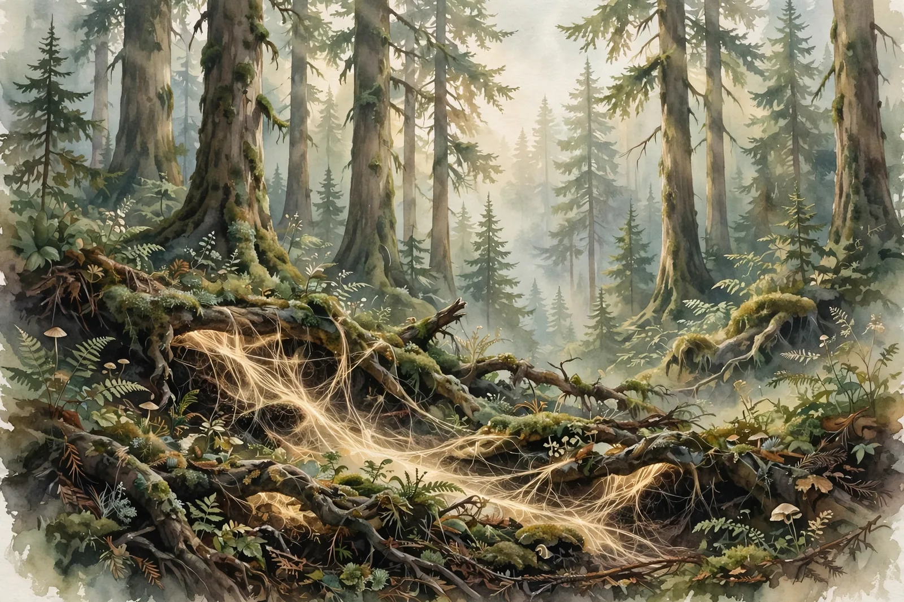

Ecologists Justine Karst, Melanie Jones, and Jason Hoeksema read every field study of common mycorrhizal networks and found the beloved story of cooperative, communicating forests outran its data: positive results get cited, caveats get dropped, and the share of unsupported claims has doubled in 25 years.

Somewhere between the TED talk and the forest-bathing retreat, the wood wide web became fact. Suzanne Simard's memoir Finding the Mother Tree turned her research into a bestseller. Peter Wohlleben's The Hidden Life of Trees sold millions. A documentary told viewers that ancient trees recognize their offspring, shuttle them food through fungal threads, and broadcast warnings when insects attack. The story showed up in classrooms, in a Radiolab episode, even in a Ted Lasso joke. Forests, we learned, are cooperative utopias wired together by fungus.
In February 2023, three ecologists decided to check the wiring. Justine Karst of the University of Alberta, Melanie Jones of the University of British Columbia, and Jason Hoeksema of the University of Mississippi published a Perspective in Nature Ecology & Evolution that took three beloved claims and tested each against the field evidence: that common mycorrhizal networks are widespread in forests, that resource transfer through them improves seedling performance, and that mature "mother trees" preferentially send resources and defense signals to their young.
Start with the map, because there barely is one. A common mycorrhizal network forms when fungal threads connect the roots of multiple plants underground, and confirming such a link in a real forest is brutally hard: digging up the evidence destroys it. Karst's team found that only two studies have ever demonstrated actual continuity of fungal links among trees, one in interior Douglas-fir in British Columbia and one in Japanese red pine. Two stands, on a planet of forests. The verdict on claim one: insufficiently supported.
Claim two fared worse under the microscope. Of the 26 field studies, 18 used mesh barriers meant to separate fungal contact from root contact, and in 16 of those 18 nobody verified that a network actually existed between the experimental plants. Worse, for every study that interpreted its results as network-mediated transfer or seedling benefit, the results could be explained without invoking a network at all: carbon moving through soil water, smaller soil volumes available to cut-off seedlings, shifts in the fungal community. The paper's summary is dry and devastating. There is approximately equal evidence that connecting to a putative network improves or inhibits seedling performance, and neutral effects are the most common.
Then the famous one. The mother tree feeding and warning her young is the emotional core of the whole story, and it is the claim with the least behind it. Karst's team found no peer-reviewed published field evidence for it at all. The insect-warning idea traces to a single greenhouse experiment in which a Douglas-fir connected to a ponderosa pine only by fungal threads, never by roots as in real forests, prompted defense chemicals in its neighbor. When the trees were connected by both roots and fungi, the effect vanished. The kin-preference idea traces largely to graduate theses whose results, the authors write, either do not support the claim or run counter to it.
The paper's title names the deeper result, and it is not about trees. It is about how science talks to itself. The team evaluated 593 papers citing seven influential studies of network structure and 1,083 papers citing eleven studies of network function. The share of citations stating claims the original evidence did not support has doubled over 25 years, climbing to roughly a quarter of citations about structure and nearly half about function. Positive results got cited. Caveats got left behind. Each retelling sanded the uncertainty down a notch, and some of the unsupported citations, the authors admit, came from their own earlier papers.
Put the map in perspective. The entire direct evidence for continuous tree-to-tree fungal links in forests comes from two studies, each covering a single stand: a few hectares of ground mapped in detail. The UN Food and Agriculture Organization puts the world's forest area at 4.06 billion hectares. A few hectares out of 4.06 billion is less than one-millionth of one percent. The most confident story in popular forest ecology rests on detailed maps covering less than one-millionth of one percent of the world's forests, and even the authors of those map studies would not claim their stands represent all forests.
Simard's camp has not conceded, and its objections deserve full weight. In a 2025 response in Frontiers in Forests and Global Change, Simard and two coauthors argued that Karst's team searched the literature too narrowly and applied subjective, unclear criteria to decide which studies counted. Simard told CBC that the critique answers a claim she never made: that the fungal network is the only pathway operating in a forest. Her papers, she said, acknowledge that carbon and signals move through soil, roots, and fungi together.
And on the narrow question of whether carbon moves between trees at all, she is right, and Karst does not dispute it. Simard's own 1997 Nature study, which Karst calls "groundbreaking" as the first replicated, controlled field test of resource transfer, demonstrated it. Klein's team showed carbon trade among tall trees in Science in 2016. Laboratory demonstrations go back to 1969. Absence of evidence is not evidence of absence. The field is young, and demanding forest-scale proof before entertaining the hypothesis is itself a choice that favors the null. Two independent teams did reach similar skeptical conclusions around the same time, Henriksson and colleagues in the New Phytologist and a thirty-author essay in Trends in Plant Science, but a formal response literature now exists on both sides, which is what a live scientific debate looks like.
Here are the honest boundaries. This was a Perspective, a review, not a new experiment; nobody went out and mapped a third forest. The inclusion criteria are genuinely contestable, which is exactly Simard's objection. The verdict on the mother-tree claim is provisional by nature: one rigorous field study, with a verified network, isolated from soil and root pathways, showing preferential provisioning of kin, would overturn it. The authors do not dispute that carbon can move through fungal threads. They dispute the intentionality layered on top. The 26 studies skew heavily toward western North America, so the evidence base carries its own geographic bias. Finally, coding a citation as "unsupported" required the authors' judgment, which is the same kind of judgment call they criticize in others.
Three separate things got fused into one story, and only two of them are solid. Fungal threads connect tree roots: true. Carbon and nutrients sometimes move along those connections: true, and demonstrated decades ago. Ancient trees deliberately provisioning their offspring and sounding alarms through the network: unproven in any forest, by anyone, ever. The myth was never that fungi connect trees. It was the altruism, the intentionality, the certainty ready for management plans.
When the wood-wide-web story finds you, in a documentary or a classroom or on a trailhead sign, ask which claim is being made. Existence, transfer, or altruism. The first two have real support. The third is the one doing all the emotional work, and it is the one with nothing behind it. If you work in forestry or restoration, hold off on designing retention or planting plans around mother-tree network benefits. In the authors' own words, the knowledge is "too sparse and unsettled to inform forest management." Push for the decisive experiment instead: verify the network exists, isolate it from soil and root pathways, and test whether kin actually get preferential treatment. Almost none of the 26 studies did all three. And remember the citation lesson the next time a finding gets more confident as it travels from journal to press release to documentary. That drift is the bias Karst measured, and now you know its name.